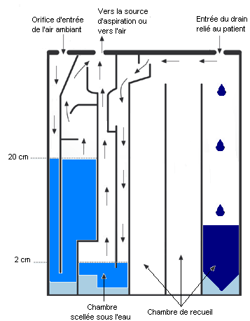
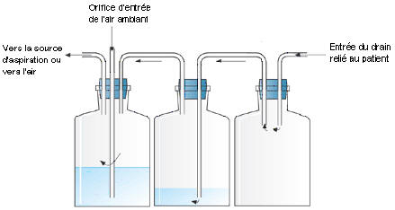

Le drain thoracique : le drainage pleural
DefinitionLe drain thoracique ou drainage pleural est l'introduction d'un drain dans l'espace pleural pour evacuer tout epanchement gazeux (pneumothorax), hemorragique (hemothorax) ou liquidien (pleuresie), ce qui permet de retablir une pression negative dans la cavite pleurale pour ramener la surface du poumon a la paroi thoracique.
Cadre legislatif- Pose relevant d'un acte medical, rele infirmier de collaboration : art. R.4311-10 decret 2004-802 du 29/07/2004.
- Surveillance relevant du rele propre
infirmier : art. R. 4311-5 decret 2004-802 du 29/07/2004.
Indications
- Epanchement dans la cavite pleurale :
- Pneumothorax : epanchement gazeux dans la cavite pleurale.
- Hemothorax : epanchement hemorragique dans la cavite pleurale.
- Pleuresie : epanchement liquidien dans la cavite pleurale.
- Pyothorax : epanchement purulent dans la cavite pleurale.
- Chylothorax : epanchement de chyle (lymphe essentiellement issue du tube digestif) dans la cavite pleurale.
- Chirurgie thoracique.
Materiel
- Materiel pour la pose du drain thoracique :
- Catheter pleural ou drain pleural de type et de diametre selon prescription :
- Drain de Monaldi ou Nelaton : charriere de 14 a 20.
- Drain de Monod : charriere de 25 a 36.
- Drain de Joly avec mandrin incorpore : charriere de 10 a 32.
- Systeme d'aspiration :
- Systeme d'aspiration e usage unique (Pleur-Evace).

- Soupape de Jeanneret.

- Tuyau sterile.
- Raccord biconique sterile.
- Manometre de contrele de niveau d'aspiration.
- Source d'aspiration.
- Champ fenetre sterile.
- Champ de table sterile.
- Bistouri sterile.
- Fil de suture non resorbable.
- Compresses steriles.
- Produits pour l’antisepsie :
- Respecter les memes gammes de produit : polyvidone iodee ou chlorexidine.
- Savon antiseptique.
- Serum physiologique ou eau sterile.
- Antiseptique dermique.
- Seringues steriles de 10 ml.
- Seringue de 60 ml a gros embout.
- Eau distillee sterile.
- 2 pinces Kocher (clamp).
- Pince a traire.
- Pansement.
- Bandes adhesives.
- Materiel pour l'anesthesie locale :
- Anesthesique local : lidocaene 1% (Xylocaenee).
- Seringue de 10 mL.
- Aiguille pompeuse (rose : 18 Gauge).
- Aiguille intramusculaire (noir : 22 Gauge ; verte : 21 Gauge).
- Materiel pour l'habillage :
- Tenue du medecin :
- Casaque sterile.
- Gants steriles a usage unique.
- Bavette.
- Charlotte.
- Tenue de l'infirmier :
- Bavette.
- Charlotte.
- Gants non steriles a usage unique.
- Materiel divers :
- Tondeuse.
- Reniforme (haricot).
- Sac a elimination des dechets papier et materiel non contamine.
- Sac a elimination des dechets d'activites de soins a risques infectieux.
- Conteneur a dechets contamines piquants et tranchants.
- Desinfectant de surface et chiffonnette.
- Necessaire a l'hygiene des mains.
Realisation du soin Installation
- Prevenir le patient, lui expliquer le processus du soin et ces objectifs.
- Installer le patient:
- Position demi-assise, bras en abduction : site d'introduction du drain sur la ligne axillaire moyenne : epanchement gazeux.
- Decubitus dorsal : site d'introduction du drain sur la ligne medioclaviculaire : epanchement liquidien.
- Effectuer un lavage simple des mains ou effectuer un traitement hygienique des mains par frictions avec une solution hydro-alcoolique : hygiene des mains.
- Installer le materiel apres verification des dates de peremptions et de l'integrite des emballages.
- Installation sur une surface propre et desinfectee au prealable.
- Installer les poubelles de tri des dechets au pied du lit du patient.
- Respecter le triangle d'hygiene, de securite et d'ergonomie : Propre (materiel) – Patient – Sale (poubelles).
- S’habiller (bavette, charlotte).
- Si besoin, depiler la zone a perfuser avec une tondeuse ou aux ciseaux, ne pas raser.
La depilation doit toujours etre realisee dans le sens du poils pour eviter les folliculites.
- Effectuer un lavage simple des mains ou effectuer un traitement hygienique des mains par frictions avec une solution hydro-alcoolique : hygiene des mains.
- Ouvrir aseptiquement les paquets de compresses et les imbiber avec le savon antiseptique (mettre un peu de serum ou eau sur le savon antiseptique afin de le diluer), le serum physiologique, l’antiseptique dermique, laisser un paquet de compresses seches.
- Seconde antisepsie avec l'antiseptique dermique realiser par l'operateur.
- Anesthesie locale.
- Installation du champ fenetre.
- Incision au bistouri.
- Introduction du trocart puis retrait du mandrin pour monter le drain.
- Clampage du drain apres retrait du trocart.
- Raccorder le drain au systeme de drainage de faeon sterile : manipulation avec des compresses steriles imbibees d'antiseptique.
- Fixation du catheter a la peau (suture) et ajout d'un fil de rappel qui permettra de rapprocher les berges cutanees lors de l'ablation du drain.
- Reglage du debit de l'aspiration selon prescription:
- 10 cmH2O : enfant premature, nouveau-ne, nourrisson de 4 a 10 kg.
- 15 cmH2O : enfant de 10 a 20 kg.
- 20 cmH2O : enfant > 20 kg et adulte.
- La force d'aspiration depend :
- Systeme Pleur-Evace :
- Systeme Pleur-Evace equipe d'un reglage d'aspiration.
- Systeme Pleur-Evace avec niveau d'eau dans la chambre de contrele d'aspiration (20 cm d'eau permet une aspiration a 20 cmH2O).
- Soupape de Jeanneret : profondeur de la tige graduee immergee dans le cylindre.
- Realisation du pansement :
- Enroulement de compresses steriles autour du drain pour assurer une etancheite.
- Pansement sterile, renforcement avec bandes adhesive.
- Eliminer les dechets contamines et desinfecter le materiel utilise ainsi que le plan de travail.
- Effectuer un lavage simple des mains ou effectuer un traitement hygienique des mains par frictions avec une solution hydro-alcoolique : hygiene des mains.
- Faire prescrire une radiographie pulmonaire pour verifier la position du drain.
- Transmission : site de ponction, reaction du patient, accidents, complications.
Risques et complications Lors de la pose
- Malaise vagal.
- Douleur.
- Hemorragie : lesion de l'artere intercostale.
- Perforation d'un organe : poumon, foie, rate.
- Embolie gazeuse.
- Hypotension : drainage trop rapide.
- Œdeme pulmonaire : reexpansion brutale du poumon.
- Deconnexion du drain :
- Clamper.
- Changer le systeme d'aspiration, raccords, tuyaux.
- Ablation accidentelle du drain :
- Tirer sur le fil de rappel pour rapprocher les berges cutanees.
- Faire un pansement compressif.
- Prevenir le medecin.
Surveillances et evaluations Durant la pose
- Evaluation de l'etat clinique du patient : malaise, etat de choc.
- Surveillance de la fonction respiratoire : frequence, amplitude, saturation en oxygene, couleur des teguments.
- Surveillance de la fonction cardio-circulatoire : pression arterielle, frequence cardiaque, couleur et chaleur des teguments.
- Surveillance de la douleur.
- Faciliter le drainage, l'expectoration et ameliorer la fonction respiratoire : position demi-assise. Decubitus dorsal chez les patients intubes et/ou inconscients.
- Respect de l'alignement corporel.
- Hemorragique, purulent, clair.
- Faire un bilan entrees/sorties : compenser les pertes.
- Debit >200 ml/h : avertir le medecin.
- Symetrie de l'auscultation des champs pulmonaires.
- Frequence, amplitude et symetrie des mouvements thoraciques.
- Gazometrie arterielle.
- Radiographie pulmonaire.
- Etat cutane au niveau du site d'insertion du drain.
- Etancheite des connexions.
- Integrite des tuyaux avec l'absence de coudure ou de parties collabees.
- Maintien du systeme de drainage en position declive par rapport au patient.
- Pente reguliere de la tubulure reliant le drain au systeme de drainage : l'accumulation de liquide dans le bas-fond d'une boucle entrave l'ecoulement.
- Traire le drain toutes les 6 heures pour faciliter la progression d'eventuels caillots ou depets de fibrine.
- Permeabilite du systeme de drainage : oscillation de la colonne d'eau :
- En ventilation spontanee : le niveau monte a l'inspiration et redescend e l'expiration.
- En ventilation artificielle : le niveau descend a l'inspiration et monte a l'expiration.
- Absence ou presence de bullage : phenomene normal tant que le poumon n'est pas revenu a la paroi thoracique : signe de presence gazeux.
- Niveau de depression prescrit.
- La force d'aspiration depend pour :
- Systeme Pleur-Evace :
- Systeme Pleur-Evace equipe d'un reglage d'aspiration.
- Systeme Pleur-Evace avec niveau d'eau dans la chambre de contrele d'aspiration (20 cm d'eau permet une aspiration a 20 cmH2O).
- Soupape de Jeanneret : profondeur de la tige graduee immergee dans le cylindre.
- Ne jamais clamper un drain qui bulle.
- Ne jamais clamper un drain si le patient est ventile en pression positive.
- Ne jamais mettre en aspiration un drain d'un malade opere d'une pneumonectomie.
- En cas de transport, remplacer eventuellement le systeme par une valve antiretour de Heimlich.